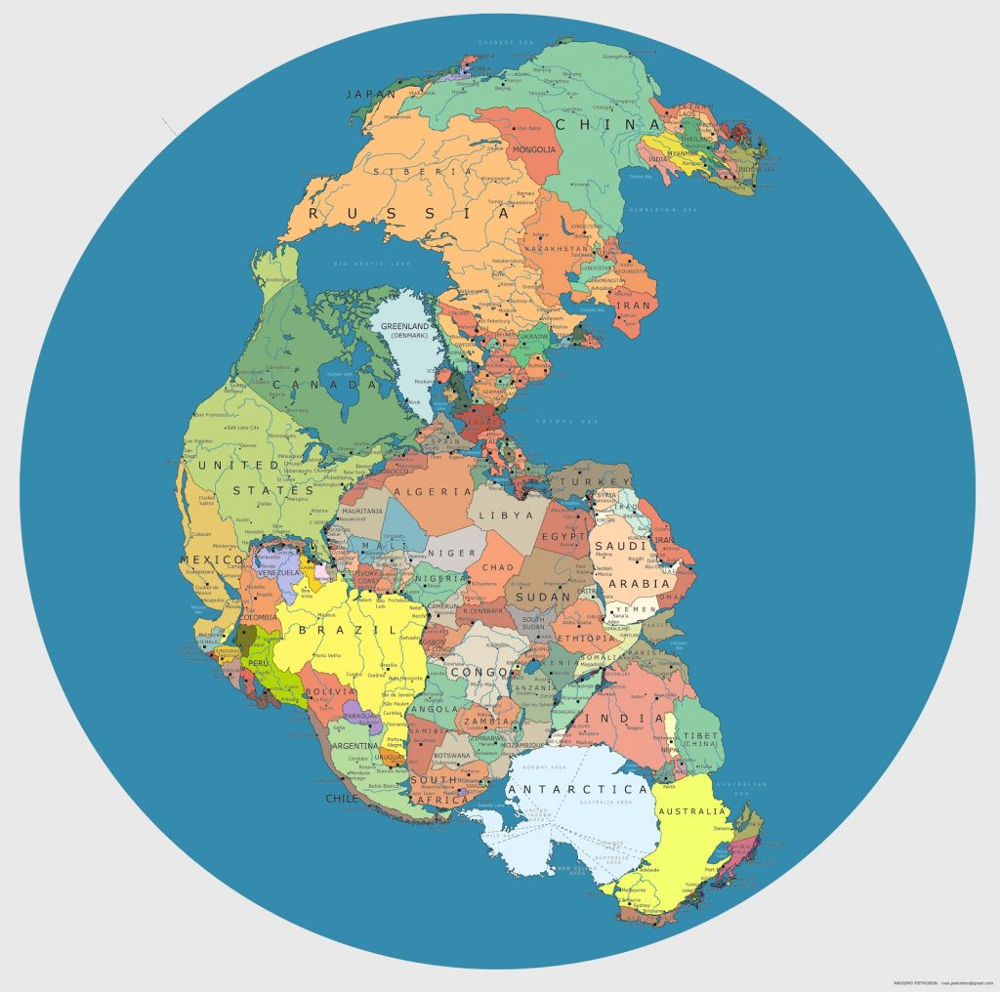

လွန်ခဲ့တဲ့ နှစ်သန်း ၃၀၀ တုန်းက ကမ္ဘာပေါ်မှာ တိုက်ကြီး ၇ တိုက်နဲ့ သမုဒ္ဒရာ ၄ စင်း မရှိခဲ့ပါဘူး။ စုစုပေါင်းမှာ တိုက်ကြီး တစ်ခုတဲ့ သမုဒ္ဒရာ တစ်စင်းထဲ ရှိခဲ့တာပါ။ ဒီတိုက်ကြီးကို ပင်ဂျီယာ (Pangea) လို့ခေါ်ပြီး တစ်စင်းထဲသော သမုဒ္ဒရာကိုတော့ ပင်သာလာဆာ (Panthalasa) လို့ ခေါ်ပါတယ်။ အဲ့ဒီတုန်းကတော့ အဲ့လို ဘယ်ခေါ်ခဲ့မလဲ၊ လူတွေမှ မရှိသေးတာ။ ဒိုင်နိုဆောတွေ ကြီးစိုးတဲ့ ခေတ်လေ။
ဆက်စပ်ဆောင်းပါး။ High Resolution World Map ကမ္ဘာမြေပုံ
ဒီမြေပုံမှာ သေသေခြာခြာ ကြည့်ရင် အခုလက်ရှိ ကမ္ဘာ့တိုက်ကြီးတွေကို မြင်နိုင်ပါတယ်။ ထူးခြားတာတွေကတော့ ကနေဒါနဲ့ ဩသတြေးလျက ကပ်နေပြီး၊ အန်တာတိကတိုက်နဲ့ အိန္ဒိယကလဲ ကပ်နေပါတယ်။ စန်တာကလော့ကတော့ အာတိတ်ဒေသမှာ မနေပဲ တောင်ကိုရီးယားမှာ ရောက်နေပါတယ်။ မြန်မာပြည်ရော ဘယ်နားရှိမလဲ ရှာကြည့်ကြပါဦး။
